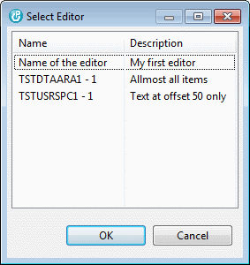
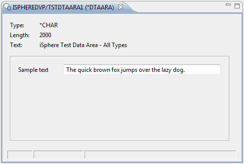

The concept of Data Space Editors is useful for data areas and user spaces that contain a data structure of data.
Once you have one or more editors for your data space object, you can start the editor from the context menu of the RSE tree. In case you have more than one editor for the selected object, you need to select the desired editor from the dialog that pops up:

Now the editor is opened and the content of your data space shows up as defined by the editor.

The data space editor adds an Exclusive Allow Read lock (*EXCLRD) to the object in order to prevent other jobs from changing the data concurrently. That is similar to what for example the LPEX editor does when it opens a source member in edit mode.
| Warning: Remember the Exclusive Allow Read lock when working on a production system! |